About This Guide
This guide covers the Argos viewer — the desktop GUI you use to open a SimDB-collected database and replay a simulation run. It is a hands-on, task-oriented companion: how to open a run, build a view out of widgets, navigate through simulated time, save and share what you built, and search across it.
It does not cover the Argos collector (the C++ side that captures data inside your simulator) or SimDB’s on-disk formats. For those, see the Argos case study in the SimDB book, which this guide supersedes for everything about the viewer’s user interface.
|
Some screenshots below are placeholders describing what still needs to be captured. They are marked clearly wherever they occur. |
1. Introduction
Argos is SimDB’s flagship application: a simulation data collector plus a desktop viewer. The collector runs inside your simulator and streams the state of the objects you have marked for collection into a single SQLite database as the simulation runs. The viewer opens that database afterward and lets you replay the run — scrubbing back and forth through simulated time while a set of composable widgets show you what each collected object looked like at any instant.
Because collection is checkpoint-based (periodic full snapshots plus small deltas in between), the viewer reconstructs an object’s exact value at any requested tick by starting from the most recent snapshot and replaying the deltas up to that point. This happens behind the scenes; you just move the playback controls and the widgets update.
2. Opening Argos
The viewer is launched from the command line as argos.py:
python3 argos.py --database path/to/collected.db
python3 argos.py --database path/to/collected.db --layout-file layout.alf
python3 argos.py --database path/to/collected.db --layout-file layout.alf --read-only| Flag | Meaning |
|---|---|
|
Required. Path to the SimDB database produced by the Argos collector. |
|
Optional. Path to a saved layout file ( |
|
Optional. Opens the viewer with save dialogs and layout persistence
disabled. The window title never shows unsaved changes, and nothing is
written back to the database or to a layout file. Most often combined with
|
2.1. Tested environment
Argos is regularly exercised against the following versions. Other versions may work, but these are the ones it’s verified against:
| Component | Version |
|---|---|
Python |
|
wxPython |
|
Check what you have installed with:
python3 --version
python3 -c "import wx; print(wx.version())"2.2. The main window
On first launch against a database you have not viewed before, you are met with an almost-empty workspace: a single tab ("Tab 1") filling the window, one empty canvas cell showing a Quick Links menu, and the playback bar along the bottom.
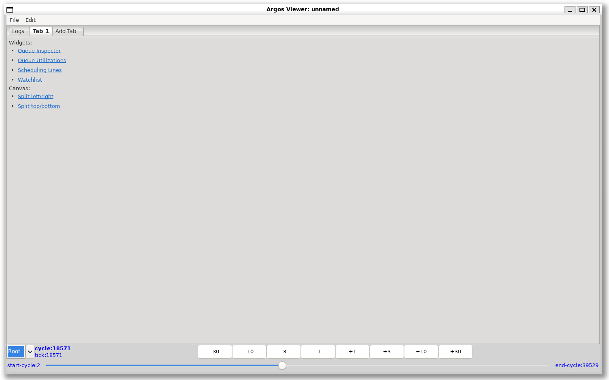
The window has three parts, top to bottom:
-
Menu bar —
File(new/open/save layout, exit) andEdit(undo/redo, font settings). -
Data inspector — a row of tabs, each holding a splittable canvas you fill with widgets. A trailing
Add Tabpage creates new tabs. -
Playback bar — the clock selector, current cycle/tick readout, step buttons, and the scrubber slider.
2.3. Reopening a view
There are two ways to get back to a view you built previously, depending on where you saved it (see Layout Files for how saving works):
-
Saved into the database — if you made changes and saved them back into
sim.dbitself (rather than to a separate*.alffile), simply reopening the same database reloads that view automatically:python3 argos.py --database sim.db # ... make changes, save back into sim.db ... python3 argos.py --database sim.db # reopens with the view you left it in -
Saved to a layout file — if you saved to a
*.alffile instead, pass that file back in with--layout-fileto reload it:python3 argos.py --database sim.db # ... make changes, save to view.alf ... python3 argos.py --database sim.db --layout-file view.alf
See View settings vs. user settings for what is and isn’t captured by a saved view.
3. Displaying a Widget: Quick Links
Every empty canvas cell shows a Quick Links menu — this is how you build up a view. It has two groups of hyperlinks:
-
Widgets — one link per widget kind: Queue Inspector, Queue Utilizations, Scheduling Lines, and Watchlist. Clicking one opens a small dialog where you pick which collected object(s) the widget should show (for example, which queue to inspect), and then the widget replaces the Quick Links in that cell.
-
Canvas — Split left/right and Split top/bottom, which divide the cell in two. Each new half again shows its own Quick Links, so you build a multi-widget layout by splitting and filling, cell by cell.
Choosing data is part of creating each widget, right where that widget will live — there is no separate "browse everything" panel.
4. Available Widgets
| Widget | What it shows |
|---|---|
Queue Inspector |
A tabular view of a container object (a queue, buffer, or similar), with per-row auto-colorization so values are easy to scan as you move through time. Rows are colorized based on the underlying DID value (or the first field value if a DID was not provided). |
Queue Utilizations |
Occupancy of one or more container objects over time, shown as a percentage of each queue’s configured capacity. |
Scheduling Lines |
A timeline-style view of scheduled activity for the elements you select, over a configurable window of ticks before and after the current position. |
Watchlist |
An aggregate view gathering several selected collectables (scalars, container contents, etc.) side by side. |
Screenshots of each widget are in Widget Deep Dives below, which also has a fuller walkthrough of Scheduling Lines, the most involved of the four.
5. The Widget Toolbar
Every populated widget has a small toolbar of five buttons in its top-left corner:
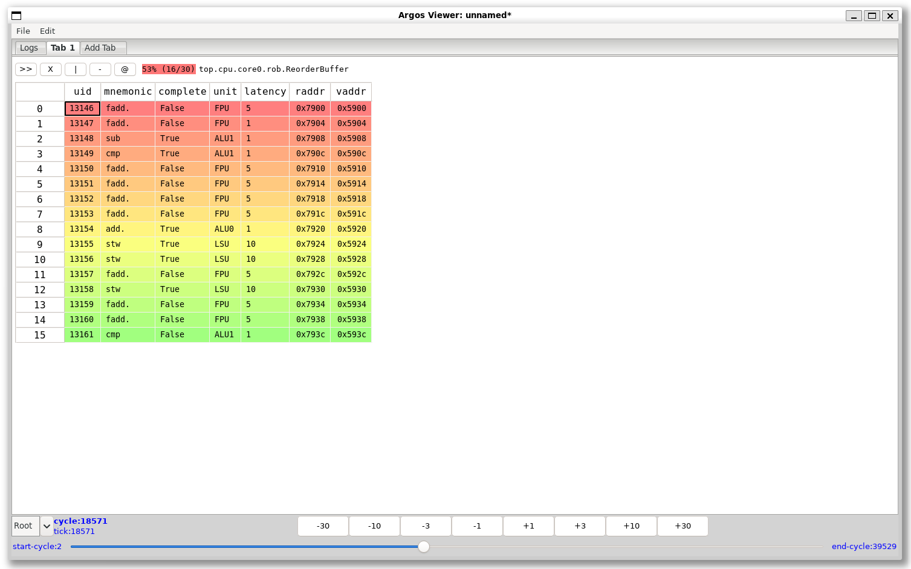
>>, X, \|, -, @| Button | Action |
|---|---|
|
Opens the widget’s own settings/selection dialog (the same dialog shown when the widget was created), so you can change what it displays. |
|
Clears the widget, returning that cell to an empty Quick Links cell. |
|
Splits this cell left/right, keeping the current widget in one half and an empty Quick Links cell in the other. |
|
Splits this cell top/bottom, same idea as |
|
Maximize. Clears every other widget on the current tab, leaving only this one. (This does not delete other tabs — just the other widgets on this one.) |
6. Arranging Multiple Widgets
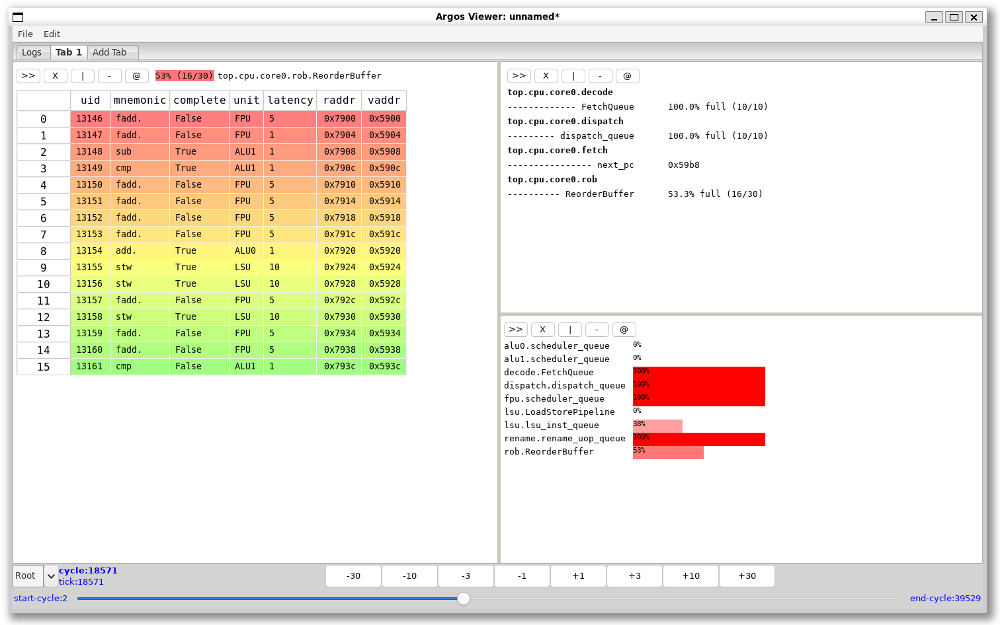
There are three ways to display more than one widget at a time:
-
Add a tab — click the trailing
Add Tabpage in the data inspector to create a new tab with its own independent canvas. Right-click a tab to rename or delete it. -
Split left/right — divides a cell into two side-by-side cells, either from an empty cell’s Quick Links or from the
|button on an existing widget. -
Split top/bottom — divides a cell into two stacked cells, from Quick Links or the
-button.
Splitting is recursive: each half can be split again, so you can build an
arbitrarily fine grid of widgets on one tab. Use the @ (Maximize) button on
any widget to quickly collapse a tab back down to just that one widget.
7. Navigating Data
The playback bar is how you move through simulated time; every visible widget updates to show its objects' state at the instant you land on.
| Control | Behavior |
|---|---|
Clock dropdown |
Selects which clock’s edges you step by. Databases may contain a single
clock or several; with multiple clocks you can also choose
|
Step buttons ( |
Jump by a fixed number of cycles of the selected clock (or ticks, if no clock is selected), snapping to that clock’s cycle boundaries. |
Scrubber slider |
Spans the whole run from its first to last recorded tick. Drag to preview; widgets refresh once you release it. |
Cycle/tick readout |
The current |
|
Click either label to jump straight to the start or end of the run. |
8. View Settings vs. User Settings
Argos keeps two separate, independently-persisted sets of settings, which is worth understanding before you start saving layouts:
| Question it answers | Examples | |
|---|---|---|
View settings (the layout) |
"What do I want to look at?" |
Which tabs exist, how each canvas is split, which widgets are placed where and their individual settings (displayed columns, colorization, selected elements), and the selected clock. |
User settings |
"How do I want to look at it?" |
Font sizes for each UI role, your search history, and the tick/cycle you were last viewing. |
View settings are what gets saved to a layout file.
User settings are saved once, globally, to ~/.argos/user_settings.yaml, and
are restored automatically every time you open Argos — independent of which
database or layout you open. Changing a user setting (for example, resizing
fonts) never marks the layout as dirty and is not part of the undo/redo
history described below.
The one deliberate exception: the current playback position is tracked as a user setting (so returning to the same database picks up where you left off), but it is explicitly excluded from the layout file itself — a layout describes how to look at a run, not where in time you last paused, so sharing a layout file doesn’t drag a colleague to your current tick.
9. Layout Files (*.alf)
A layout file captures your view settings so you can reopen it later or share it with a colleague: the tabs, how each canvas is split, which widgets are placed where, their individual settings, and the selected clock.
-
File > New Layout (
Ctrl+N) — resets the canvas to a blank layout. -
File > Open Layout (
Ctrl+O) — opens a saved*.alffile. -
File > Save Layout (
Ctrl+S) — saves the current layout. If it has never been saved before, you are prompted for a file to save to. -
--layout-fileon the command line loads a layout file immediately on startup (see Opening Argos).
The window title shows the current layout file’s name, with a trailing *
whenever there are unsaved changes.
If you close Argos with unsaved changes and no layout file is in use, you are
offered a choice: save to a new *.alf file, or save silently as the
database’s "last known view" so the same layout reopens automatically next
time you open that database without naming a layout file.
10. Undo and Redo
Argos supports undo/redo for layout changes, via Edit > Undo
(Ctrl+Z) and Edit > Redo (Ctrl+Y).
The undo/redo history covers changes that dirty the layout: creating, removing, or splitting a widget, maximizing a tab down to one widget, adding, renaming, or deleting a tab, moving a splitter’s sash, and changing a widget’s own settings (displayed columns, auto-colorization, which elements a Scheduling Lines or Watchlist widget tracks, and so on).
The history is kept in memory only — it is never written to the layout file, the database, or the user settings file — and is reset whenever a new layout is loaded. Changing a font setting does not push an undo entry, since fonts are a user setting rather than part of the layout.
11. Font Settings
Edit > Fonts… opens a dialog with independent point-size controls grouped into Global (buttons, tabs), Widgets (metadata text, grid labels, grid cells), and Search (results titlebar, results list).
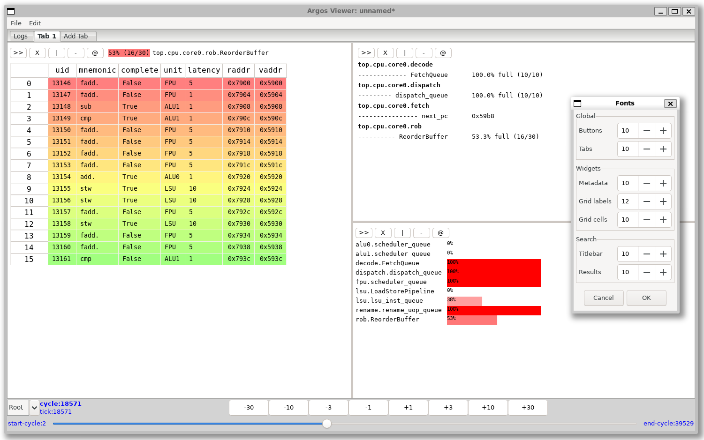
Edit > Fonts… dialog, with independent spinners grouped into Global, Widgets, and SearchFont sizes are a user setting, not part of the layout: changing them does not mark the current layout as dirty, does not create an undo/redo entry, and is remembered globally the next time you open Argos against any database.
12. The Logs Tab
A fixed, non-editable Logs tab appears as the first tab — but only when the collected run actually recorded notifications worth surfacing (warnings, errors, or informational messages written to the collector’s notifications table during the run). If a run recorded nothing, there is no Logs tab at all.
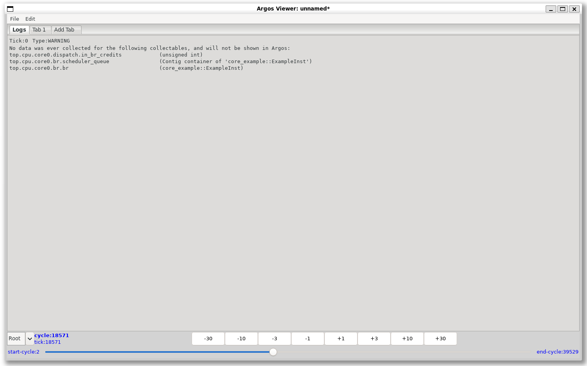
Each entry shows the tick it occurred at, its type, and the message text, in the order it was recorded.
13. Searching (Ctrl-F)
Ctrl-F opens the Search dialog from anywhere in Argos (it has no menu
item — it is a keyboard-only accelerator).
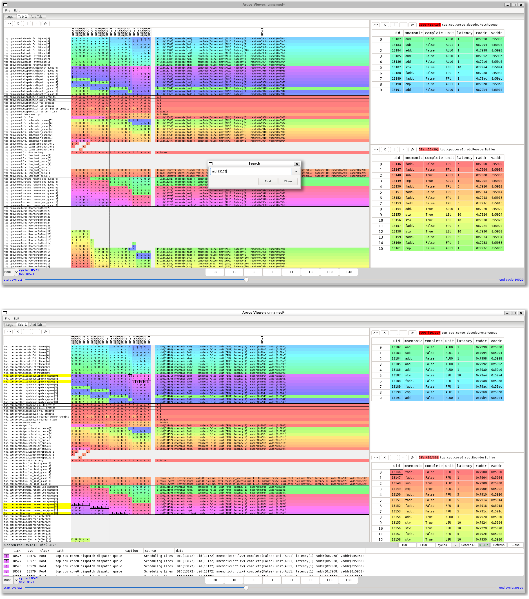
Ctrl-F Search dialog (top) and the resulting search results panel with on-screen matches highlighted and the "Search DB" controls (bottom)13.1. Search syntax
Searches are written as a list of field/value constraints, in either of two equivalent forms:
uid:123 opcode:0xdeadbeef
uid(123) opcode(0xdeadbeef)Fields can be separated by spaces or commas, values may be decimal or 0x
hex, and any number of fields can be combined. The Find button stays
disabled (with a tooltip showing an example) until the text parses as a valid
set of constraints.
13.2. The search results panel
Running a search opens a panel above the playback bar with one row per match. Results appear in two groups:
-
Matches found among the data already on screen, across every tab, shown first.
-
Search DB results — an explicit, separate search of the underlying database over a tick/cycle range, which can be slower than scanning what is already loaded. The panel has its own
start/end/unit (ticks or cycles) fields and a Search DB button so you can search a specific window of the run (searching the entire database is possible but can take a while on large runs).
Each row shows the tick, cycle, clock, element path, and matched field/value pairs, plus the auto-color/tag used to highlight that row’s data (see below). Double-clicking a Search DB row jumps the playback position to that result’s tick. Refresh reruns the active search (useful after you navigate or change what’s on screen); Close hides the panel.
13.3. Highlighting matches in widgets
While search results are shown, every widget on every tab highlights any of its own data that matches the active search — you don’t have to hunt for matches yourself; they’re visually called out wherever they already appear on screen.
13.4. Searching from a widget’s context menu
You can also start a search without typing anything: right-click struct data
and choose Search. The submenu lists every field of that struct as
name:value, and picking one searches for that field/value (limited to that
struct’s element path).
-
Queue Inspector: right-click a grid cell. The clicked column’s field is listed first, then a separator, then all of the row’s fields.
-
Watchlist: right-click a struct’s value. (Integer, simple, and container values have no search menu.)
-
Scheduling Lines: right-click a data cell (or the detailed packet column) that holds a struct. The menu lists all of that struct’s fields.
The Queue Utilizations widget has no search menu.
14. Widget Deep Dives
14.1. Queue Inspector
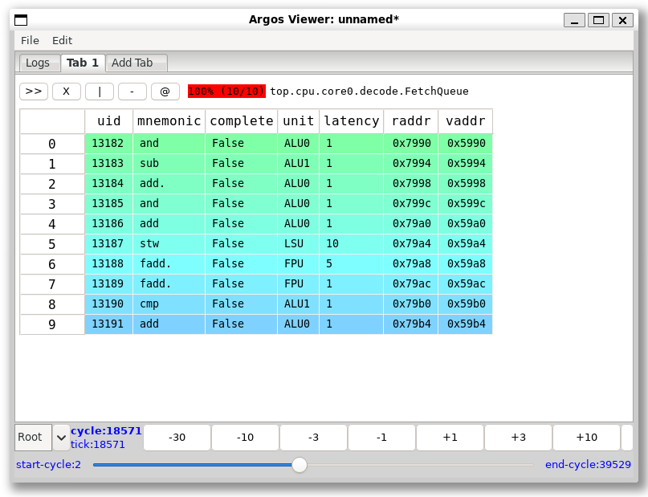
14.2. Queue Utilizations
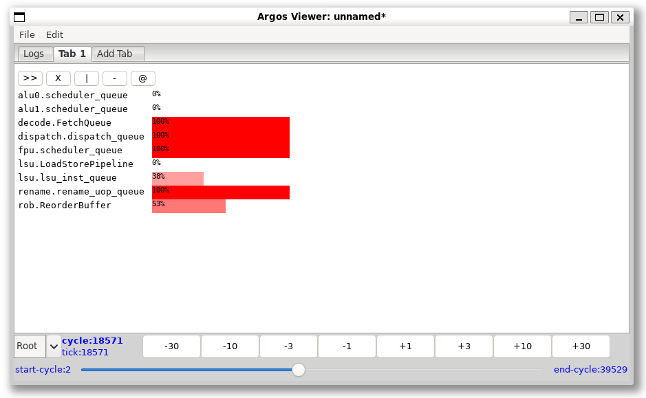
14.3. Watchlist
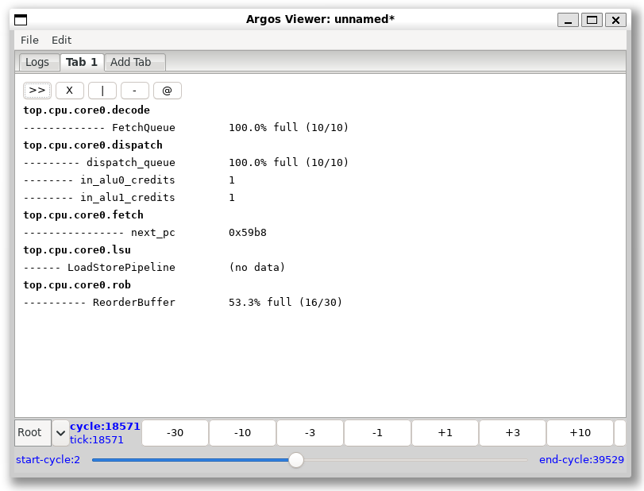
14.4. Scheduling Lines
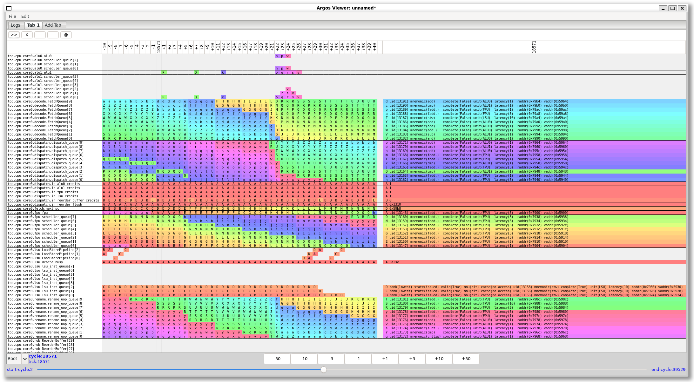
A Scheduling Lines widget gives a bird’s-eye view of collected data spanning a
wide range of cycles. Everything about what it shows and how is configured
through its >> settings dialog ("Edit Data Selections"), covered setting by
setting below. That dialog also has its own Help button with this same
reference built in, so it’s always on hand while you’re using the widget.
Selections
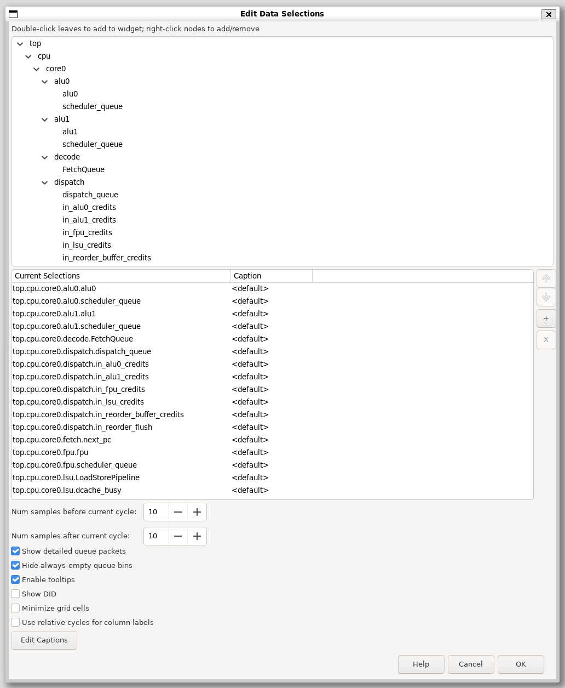
The top half of the dialog is shared by every widget that lets you pick more than one element. Double-click a leaf in the tree (or right-click a node to add/remove its whole subtree) to add it to the Current Selections list on the right. From there you can:
-
Reorder the selected rows with the up/down arrow buttons — this is the order the rows are drawn in the widget, top to bottom.
-
Add a row by typing a path directly with
+(useful for a path that isn’t in the tree yet). -
Remove the selected rows with
X.
Sample window
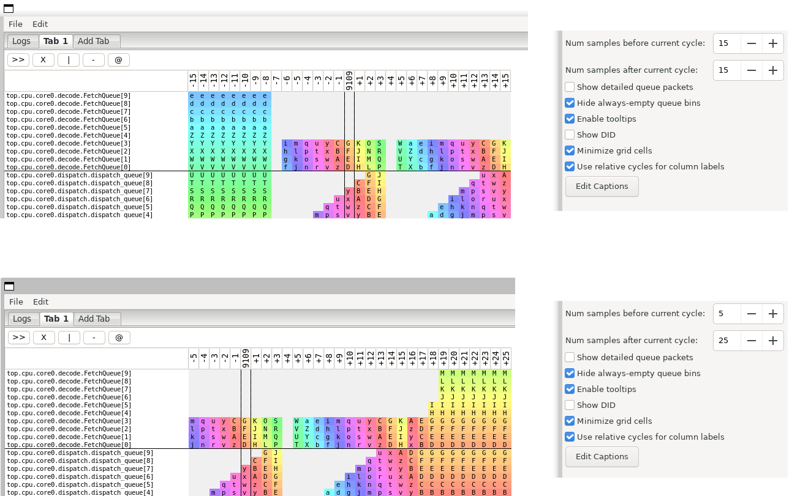
Num samples before current cycle and Num samples after current cycle control how many cycles are drawn on either side of the current position, from 1 to 200 each — but the two numbers can’t add up to more than 250. The window doesn’t have to be symmetric: the example above pairs an even 15/15 split with an asymmetric 5-before/25-after window that leans further into the future.
Show detailed queue packets
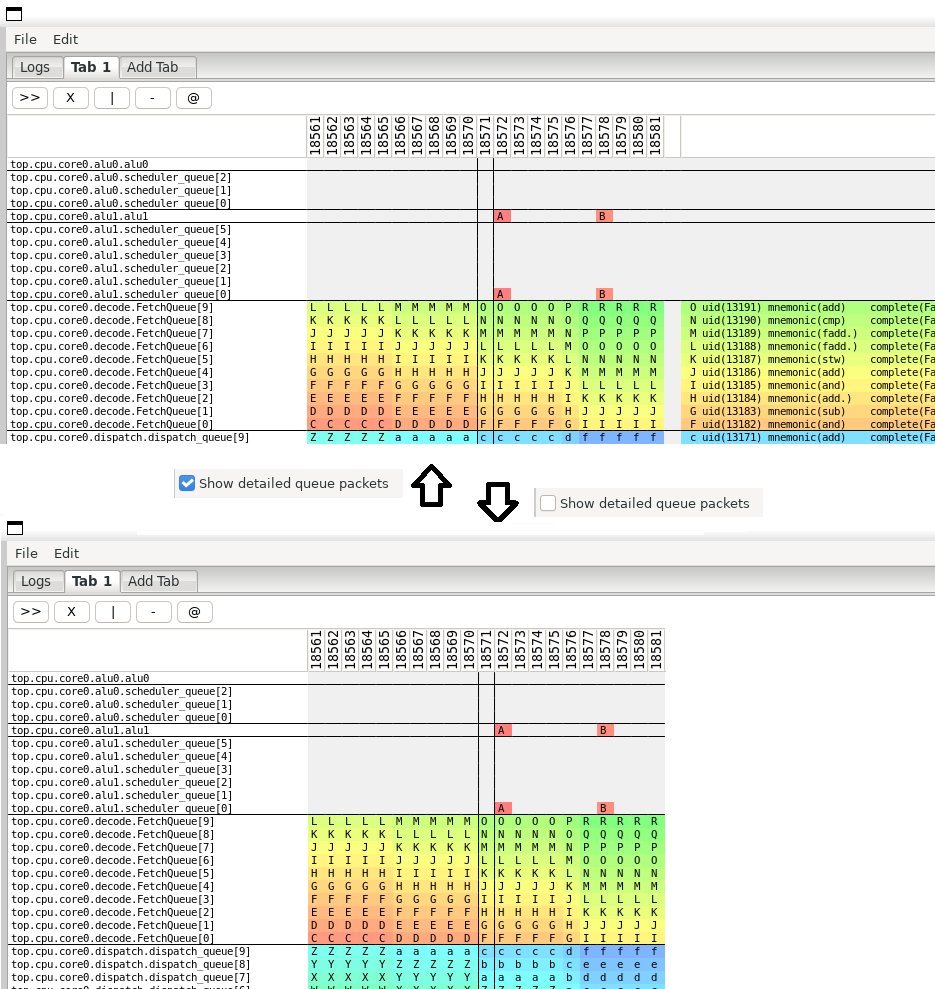
When checked, a far-right column shows each row’s full expanded annotations at the current cycle (its field/value pairs) — the same detail you’d otherwise only get from a tooltip or the search results panel.
Hide always-empty queue bins
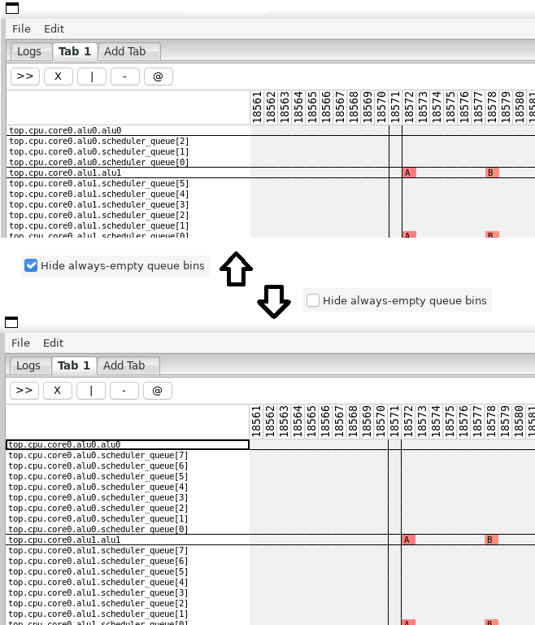
A container is shown one row per bin, up to its full capacity. When checked,
bins that were never collected at any point in the run are squashed into a
single row (e.g. scheduler_queue[2] for a queue with capacity 8 that never
held more than 3 elements). When unchecked, every bin up to capacity is
expanded in the grid, and the bins that were never used stay empty for the
whole run.
Show DID
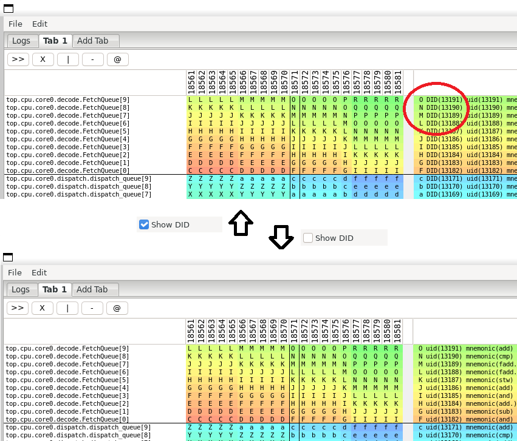
When checked — and the collected data actually has a DID field — the DID is shown alongside the uid in the detailed packet column and in grid cell tooltips.
Minimize grid cells
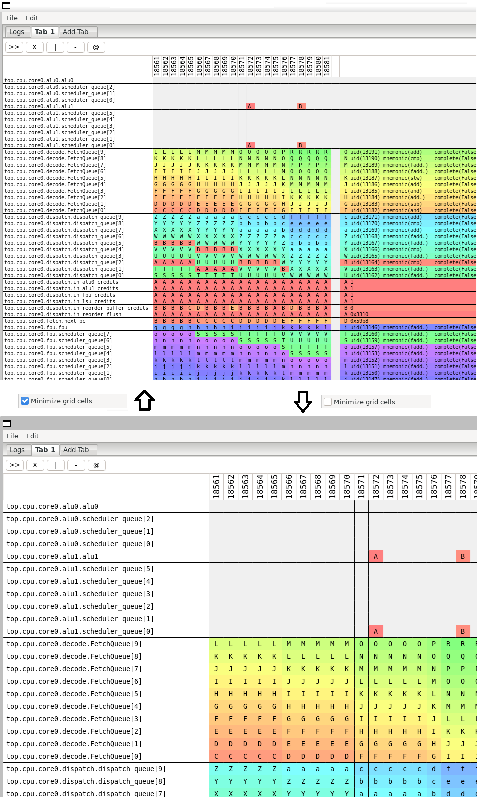
When checked, the grid is rendered with smaller fonts and tighter padding, so more rows and columns fit on screen at once — useful once you’ve selected a lot of elements or widened the sample window.
Use relative cycles for column labels
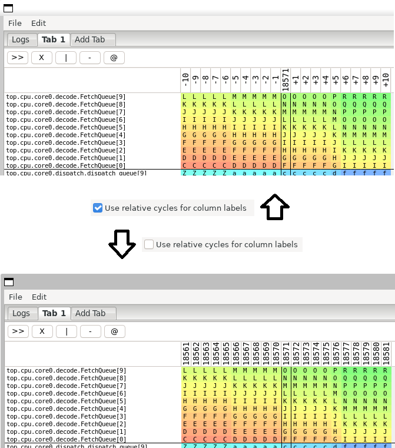
When checked, column headers are labeled relative to the current cycle
(-10 … -1, the current cycle, +1 … +10). When unchecked, column
headers show absolute cycle numbers instead.
Captions
By default, the caption shown in the far-left column for each selection is
its full element path, e.g. top.cpu.core0.decode.FetchQueue[3]. You can
shorten this per selection from the Caption column in the selections list,
or go further with the Edit Captions button for per-bin overrides.
default-caption
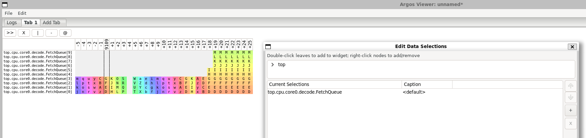
With no caption set (<default>), every bin of a selected container is
labeled with its full path, e.g. top.cpu.core0.decode.FetchQueue[9] down to
…FetchQueue[0].
simple-caption
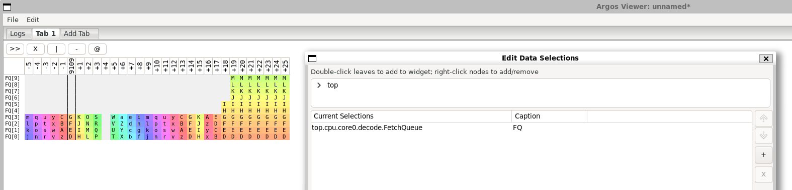
Changing a selection’s <default> caption to a short name, e.g. FQ,
renames every bin of that container at once — the rows become FQ[9] down
to FQ[0] instead of the full path.
bin-captions
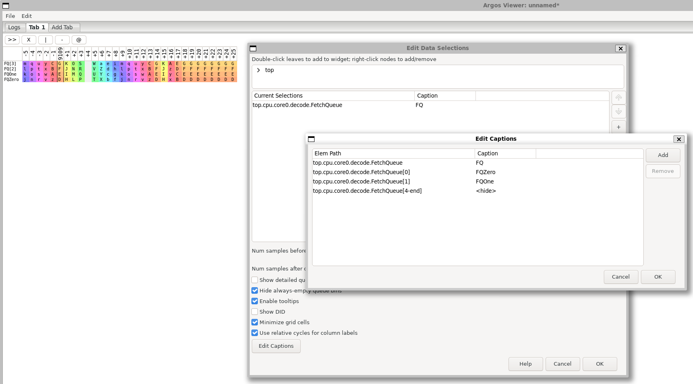
Click Edit Captions to override individual bins without touching the rest
of a queue’s caption. Each entry maps an element path — optionally a bin
range like [4-end] or [2-5] — to a caption:
-
A caption for a specific bin always wins over a range that also covers it; among overlapping ranges, the one with the highest start index wins.
-
Setting a bin’s (or range’s) caption to
<hide>omits it from the widget entirely — useful when a container’s capacity includes bins that don’t make sense for a given layout. -
Bins that were never collected are omitted by default; appending
, <fixed>to a caption (e.g.P0, <fixed>) always shows that bin anyway, hatched out with a tooltip explaining it was never collected.
In the example above, top.cpu.core0.decode.FetchQueue keeps its queue-wide
FQ caption for bins 2 and 3, bin 1 is renamed to FQOne, bin 0 to
FQZero, and bins 4 and up are hidden — leaving just four rows: FQ[3],
FQ[2], FQOne, FQZero.